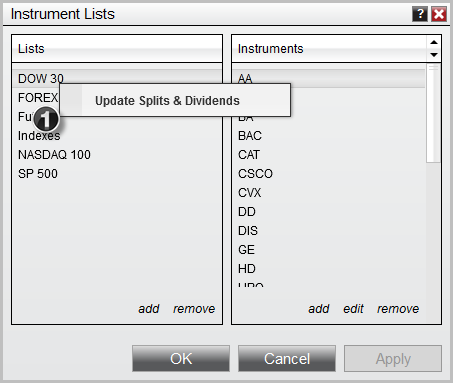

|
<< Click to Display Table of Contents >> Updating Splits and Dividends |


|
Updating Splits and Dividends
|
<< Click to Display Table of Contents >> Updating Splits and Dividends |
|
You can quickly update all Splits and Dividends on an instrument list via the Instrument Lists window. Please follow the guide Adding Splits and Dividends for details on how to enable NinjaTrader to do updates on the selected instrument list.
To trigger and update of all Split and Dividend data on all instruments on a specific instrument list:

1.Right click on the Instrument List you want to trigger the mass update for and select Update Splits & Dividends.
NinjaTrader will now request historical splits and dividend information from your provider and populate the information in your local database.